A cross-sectional study measures a defined group during one period. It produces a snapshot of levels, categories or needs that a school can use to allocate support.
Methodological sources (von Elm et al., 2007; Wang & Cheng, 2020).
When to Use It
Choose it to estimate how many Grade 7 learners currently need reading support, or to describe how the distribution varies across sections assessed under comparable conditions.
A school team may ask two superficially similar questions. “How many assessed learners currently need a decoding intervention?” helps schedule sessions. “What fraction of all enrolled learners needs help?” concerns the entire roster. The first can have an exact answer from completed screens. The second remains partly unknown when some eligible learners were absent. Decide which decision the evidence must support before selecting the denominator. Report both the known count and outstanding assessments if the school needs to reserve places.
Section averages deserve care when class sizes differ. Suppose 6 of 10 learners in Section A and 10 of 40 in Section B attained a benchmark. The unweighted mean of their percentages is 42.5%. The proportion among all 50 assessed learners is 16/50, or 32%. Both calculations can be defined, but only the latter answers a question about the proportion of individual learners across the two sections.
Participants and Evidence
Keep the eligible roster, assessment dates, score or category definitions and participation status. A count of assessed learners and a count of eligible learners serve different purposes.
The word “learners” must identify a population at a particular date. The pupils available in a classroom can differ systematically from pupils enrolled but often absent.
How to check. Take the official roster on the agreed date. Mark transfers, absences, partial responses and completed records separately. Compare participation rates across sections before comparing attainment.
If the condition is weak. When coverage differs, report each section’s denominator and organize a comparable make-up assessment if feasible. Retain “unknown” for pupils whose attainment has not been measured.
Measurement equivalence
A common label such as “proficient” should represent the same performance everywhere it is applied. Differences in reading passage difficulty or scoring can appear as differences between sections.
How to check. Have assessors independently score a few common sample responses. Compare classifications around the cutoff and review which criterion produced disagreement.
If the condition is weak. Clarify borderline cases and rescore affected responses consistently. When forms cannot support a common cutoff, present separate descriptions with their own scales.
Time window
The snapshot represents one defined period. Testing one group after specific instruction and another before it makes timing part of the comparison.
How to check. Place testing dates beside the teaching calendar. Check whether a break, intervention, or change in test administration falls between sections’ dates.
If the condition is weak. Choose a tighter assessment period or explain which comparison is affected. Date any follow-up as a separate observation.
Planning the Study
Define the population, time window and outcome before collecting results.
Record every eligible learner as assessed or missing. Summarize counts and percentages within each section using consistent denominators.
Inspect the overall distribution and explain any differences in coverage before comparing sections.
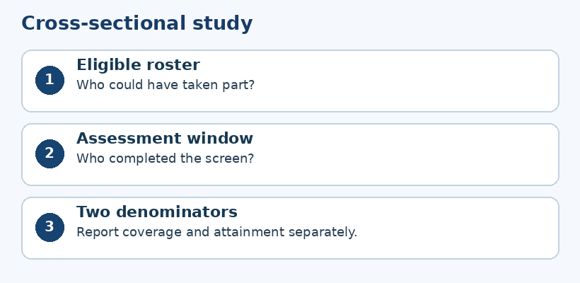
Eligible roster: Who could have taken part? Assessment window: Who completed the screen? Two denominators: Report coverage and attainment separately.
Worked School Example
Illustrative example. Of 80 eligible learners, 72 completed the screen and 18 of those met the benchmark. Coverage was 72/80, or 90%. Benchmark attainment among assessed learners was 18/72, or 25%. The eight absent learners have unknown attainment.
Applying the approach
Try a missing-data check using the 80-person roster example. Eighteen known learners met the benchmark. If none of eight absent learners would meet it, 18/80, or 22.5%, of the roster meets it. If all eight would meet it, 26/80, or 32.5%, meets it. These limits describe possible outcomes given incomplete coverage and do not assign an achievement level to any absent learner. The practical follow-up is to screen the eight pupils before finalizing the group list.
Prepare a three-row table for one actual section with “met benchmark,” “below benchmark” and “unassessed.” Verify that the rows sum to eligible enrollment. Decide which rows supply the numerator and denominator for each indicator. A learner who attempted the test and obtained zero belongs in the scored category. A learner with no test has no observed score.
For comparisons across grade levels, confirm whether each grade used its own benchmark. A grade-specific attainment rate can compare attainment of grade expectations. It does not directly compare reading ability on a common metric.
Give the period, setting, coverage and denominator beside each percentage. A school-wide census describes that school during that period. Extension to other schools requires a sampling rationale.
Record the assessment window, benchmark definition, instrument and scoring procedure. Identify whether the group was a census of eligible learners, a probability sample or a convenience sample. The scope of a statement about prevalence should match the population that had a known opportunity to participate. A higher percentage in one section can justify checking its support needs, while an explanation involving teacher effectiveness would require different evidence.
Alternatives and Common Mistakes
Choose a longitudinal design to study individual growth. Comparing the current Grade 7 and Grade 8 percentages describes different groups and cannot show how the same learners changed.
References
von Elm, E., Altman, D. G., Egger, M., Pocock, S. J., Gøtzsche, P. C., & Vandenbroucke, J. P. (2007). The Strengthening the Reporting of Observational Studies in Epidemiology (STROBE) statement: Guidelines for reporting observational studies. PLoS Medicine, 4(10), Article e296. https://doi.org/10.1371/journal.pmed.0040296
A correlational study measures two variables on the same units and examines how they vary together. The direction, shape and strength of the association all matter.
Methodological sources (Akoglu, 2018; Schober et al., 2018).
When to Use It
Choose it when the question concerns an association, such as whether frequency of voluntary practice relates to fluency. Record both values for every learner included in the comparison.
Start by choosing a question in the units the school understands. A relationship between minutes read and words correctly read per minute is different from a relationship between the ranks of learners on both measures. A coefficient such as .80 describes direction and degree of association. It does not mean that each session produced an 80% gain. A slope from a suitable regression would have interpretable outcome units per additional session, with the same need for caution about causal language.
Be attentive to how the sample was selected. If all participants entered tutoring after scoring below one cutoff, their starting scores cover only a narrow part of the grade’s achievement range. A coefficient calculated in that restricted group answers a question about participants meeting the eligibility rule. Extending it to all grade-level learners assumes evidence about a wider range that the study never observed.
Participants and Evidence
Collect matched measures, units, collection dates, score ranges and plausible common influences such as prior fluency or access to materials. Define whether a row represents a learner or a class.
Each point must contain two measurements from the same analysis unit over appropriate time windows. A section average copied beside every learner score creates artificial replication.
How to check. Trace several points back to the source records. Check dates, matching keys, duplicate entries, and whether zero sessions means verified nonattendance or missing attendance records.
If the condition is weak. Repair mismatches before analysis. For section-level questions, analyze sections as the units or use an appropriate multilevel method when both levels matter.
Form of the relationship
Pearson summarizes a straight-line tendency. Spearman summarizes a consistently increasing or decreasing ordering. A pronounced U shape can yield a small coefficient despite a clear pattern.
How to check. Draw a scatterplot in the original units. Mark ties, extreme values and potential clusters by section. Inspect the plot again after verifying suspicious records.
If the condition is weak. Describe a nonlinear pattern directly or plan a justified model for it. Do not delete a valid outlying learner merely because the coefficient becomes smaller.
Alternative explanations
The association can reflect prior achievement, access or another shared influence. One measure may also affect participation in the other.
How to check. Draw a simple timeline showing when practice and achievement were measured. Compare baseline attainment and available opportunities across levels of participation.
If the condition is weak. Present plausible competing explanations. Examine meaningful subgroups when sizes permit, and reserve claims about the effects of additional practice for a suitable intervention design.
Planning the Study
Define both variables and the unit of analysis.
Match the observations, resolve inconsistent time windows and record missing pairs. Plot the data before selecting a coefficient.
Calculate the appropriate coefficient and its uncertainty when warranted. Examine whether the pattern changes across relevant groups.
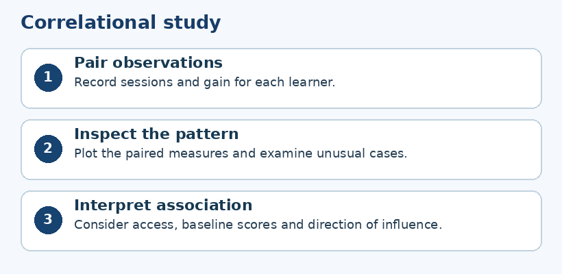
Pair observations: Record sessions and gain for each learner. Inspect the pattern: Plot the paired measures and examine unusual cases. Interpret association: Consider access, baseline scores and direction of influence.
Worked School Example
Illustrative example. Four learners recorded 1, 2, 3 and 4 practice sessions and gained 2, 4, 3 and 5 points. The two sets of ranks yield Spearman’s rho of .80. The third learner gained less than the second, so the upward pattern includes an exception.
Applying the approach
Hand-check the four-learner example. Attendance ranks are 1, 2, 3 and 4. The gain ranks are 1, 3, 2 and 4. The differences between ranks are 0, −1, 1 and 0, and the squared differences sum to 2. With four untied pairs, Spearman’s shortcut gives 1 − 6(2)/[4(16 − 1)] = .80. With many tied scores, use the correlation of the average ranks or software that handles ties.
Draw another classroom dataset in which each section shows a flat pattern, but one section has both greater access to materials and higher scores. Pooling the dots may make the overall trend look positive. Color the points by section and compare the plots. This exercise helps determine whether the question concerns between-section differences, within-section association, or both.
A coefficient of zero can arise when an association bends upward and then downward across the observed range. Retain the scatterplot beside the numerical result so the reader can see patterns lost in a single summary.
State the number of pairs, observed direction, coefficient and any influential cases. Four pairs can illustrate a calculation, but give a very uncertain estimate of the broader association.
State how many complete pairs contributed, how missing pairs arose, what the two variables measured and why the selected coefficient fits the plot. Include the estimate and an appropriate interval when making a population inference. For the illustrative four pairs, say that higher session ranks tended to accompany higher gain ranks among these learners. Their small number leaves the size of the broader association highly uncertain.
Alternatives and Common Mistakes
Choose an experimental design to estimate an intervention effect. Avoid inferring that extra sessions caused higher gains. Learners with greater access to practice materials may attend more often and improve for other reasons.
Schober, P., Boer, C., & Schwarte, L. A. (2018). Correlation coefficients: Appropriate use and interpretation. Anesthesia & Analgesia, 126(5), 1763–1768. https://doi.org/10.1213/ANE.0000000000002864
Longitudinal observational study
Overview
A longitudinal observational study follows the same people over time as events unfold. It reveals individual trajectories that can disappear when only successive group averages are compared.
Methodological sources (Caruana et al., 2015; von Elm et al., 2007).
When to Use It
Choose it when timing or patterns of development matter, such as growth, plateau or decline in reading fluency across three school terms.
Decide whether the target is the typical individual change, the group’s average level at each checkpoint, or the proportion crossing a benchmark. Those answers require different displays. For individual change, connect observations for each learner. For benchmark transitions, classify the same learners at both relevant checkpoints. A graph of changing group means can be useful for workload planning, yet the graph alone hides whether any given learner improved.
Two trajectories with the same total change can suggest different classroom responses. A reader moving from 35 to 50 to 50 words per minute may need support after an early gain. Another moving from 35 to 35 to 50 gained later. In each case the overall increase is 15. A line plot and dated implementation notes make the timing visible and help the team identify which follow-up questions to ask.
Participants and Evidence
Keep a stable learner identifier, dates, comparable scores, assessment conditions, attendance at each assessment and reasons for missing measurements. Document changes in teaching or assessment.
A longitudinal trajectory belongs to one learner. Learners entering after baseline and transfers leaving before endline can change the composition of the observed group.
How to check. Create a participant-by-wave grid. Mark entry, completion, transfer and intermittent absence separately. Resolve duplicated or reassigned identifiers against the roster.
If the condition is weak. Define the original cohort and any later entrants. Include late entrants in analyses they can support and label the population in each reported result.
Comparable timing and measurement
Observed change combines development with any shift in instrument difficulty, testing conditions or interval length.
How to check. Record actual dates as well as term labels. Compare scoring rules, passage difficulty, raters, and duration. Identify learners who were assessed weeks later than peers.
If the condition is weak. Use comparable forms and calibrated scoring. If timing varies meaningfully, analyze elapsed time or restrict claims to comparable intervals.
Selective follow-up
Learners completing all waves may differ from those lost to follow-up. A rising group average may partly reflect which learners remained.
How to check. Compare baseline distributions and attendance for completers and noncompleters. Check reasons for absence and the number returning after a missed wave.
If the condition is weak. Show attrition by wave and examine sensitivity to inclusion rules. Seek support for an appropriate repeated-measures model if incomplete trajectories form a substantial share of the data.
Planning the Study
Set checkpoints and define meaningful change.
Match records across dates and display the number assessed at each checkpoint. Plot each learner’s trajectory alongside the group summary.
Use an analysis that accounts for repeated measurements. Explain how missing observations were handled and compare completion patterns.
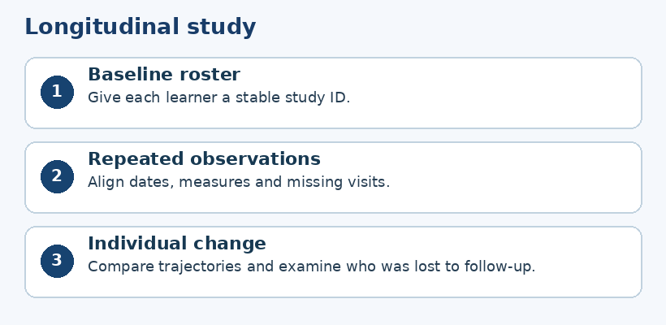
Baseline roster: Give each learner a stable study ID. Repeated observations: Align dates, measures and missing visits. Individual change: Compare trajectories and examine who was lost to follow-up.
Worked School Example
Illustrative example. Three learners read 40–45–51, 50–52–53 and 35–39–missing correct words per minute across three comparable passages. The two complete trajectories gained 11 and 3. Their average gain was 7 words per minute. The third learner’s final change remains unknown.
Applying the approach
Revisit the three learners in the worked example. The baseline mean across everyone is (40 + 50 + 35)/3 = 41.7. The final mean is (51 + 53)/2 = 52. Subtracting gives an apparent 10.3-word difference. The two learners observed at both endpoints started at an average of 45 and ended at 52, a 7-word gain. Write both denominators beside the values and explain why the larger difference answers a different question.
Design a coding scheme with one row for each scheduled learner assessment. Keep a blank score separate from a reason field, such as “absent,” “transferred” or “assessment interrupted.” For a late assessment, enter its actual date. This structure preserves each learner’s timeline and allows another teacher to reproduce the group summary without guessing the meaning of a blank.
For benchmark transitions, count how many initially below benchmark crossed it, how many stayed below, and how many lacked a later observation. Keep initially proficient learners in a separate row to make the eligible denominator transparent.
Show both variation and central tendency, with denominators at each time. Explain any apparent gain that could arise from easier passages or weaker readers missing a later assessment.
Report the cohort entry rule, elapsed times, number providing data at each wave, number with complete trajectories, and the treatment of missing measurements. Show at least one measure of variability and describe whether the general pattern conceals stable or declining learners. When a new reading program starts midway, record the timing as contextual information. Observed improvement can reflect ordinary development, other instruction or a changing sample.
Alternatives and Common Mistakes
Use repeated cross-sectional surveys if each wave samples a different cohort. Analyze the resulting group trends separately from individual growth. Consider a comparison condition if the question asks whether a program caused growth.
von Elm, E., Altman, D. G., Egger, M., Pocock, S. J., Gøtzsche, P. C., & Vandenbroucke, J. P. (2007). The Strengthening the Reporting of Observational Studies in Epidemiology (STROBE) statement: Guidelines for reporting observational studies. PLoS Medicine, 4(10), Article e296. https://doi.org/10.1371/journal.pmed.0040296
One-group pretest–posttest study
Overview
One group takes a baseline measure, participates in an intervention and completes a comparable follow-up measure. Pairing shows how the measured outcome changed for participating learners.
Methodological sources (Jhangiani et al., 2019; Marsden & Torgerson, 2012).
When to Use It
Choose it to document local change during an intervention when a comparison condition is unavailable. Define the outcome and completion criteria before analyzing gains.
Start by translating a broad effectiveness claim into an answerable local question. “What change occurred among participants who completed comparable assessments during six weeks of remediation?” identifies the group, period, outcome and comparison. To ask what would have happened to the same learners without remediation requires additional evidence. Even a small p-value for paired differences addresses change, while the counterfactual remains unobserved.
Track events between the two tests. A teacher may have retaught a unit to the whole grade, or a school reading week may have increased practice for everyone. A short timeline showing intervention sessions, ordinary instruction, examinations and attendance helps explain the context of change. It also helps the team design the next cycle with alternate forms, a comparison group or extra baseline checkpoints.
Participants and Evidence
Collect matched pretest and posttest scores, scale limits, testing dates, intervention exposure, eligible counts and missing records. Keep implementation notes about other events that could influence results.
A gain measured in points is interpretable only when the two scores represent comparable skill on the same scale. A shared maximum score alone does not establish equivalent difficulty.
How to check. Compare competency coverage, form specifications, time limits and scoring rubrics. Check whether learners rehearsed the exact items used again at endline.
If the condition is weak. Use equivalent measures where feasible. If comparability remains uncertain, describe performance on each assessment and qualify the interpretation of the numerical difference.
Regression to the mean
When entry depends on an unusually low score, some learners may score closer to their typical level on retesting even without an effective intervention.
How to check. Record the screening rule and whether the eligibility test was also the pretest. Look for evidence of ordinary fluctuation on prior comparable measures.
If the condition is weak. Use another baseline measurement or a defensible comparison group when feasible. Explicitly retain regression to the mean as a competing explanation for observed gains.
Complete and credible pairs
Paired analysis requires two valid measurements from each included learner. A difference between two whole-class averages can conceal changing participation.
How to check. Create a matched table using learner identifiers. Compare enrollment, baseline completion, session attendance and endline completion. Examine score differences for extreme values or ceiling effects.
If the condition is weak. Describe who was excluded from the paired estimate and why. Verify unusual values against the source and choose an analysis suitable for the distribution of differences.
Planning the Study
Specify the baseline, intervention period and endline.
Match records and compute posttest minus pretest for each learner. Examine the distribution of differences, including zero or negative gains.
Report mean or median change as appropriate. For inference, assess whether a paired t-test or a rank-based alternative fits the question and paired differences.
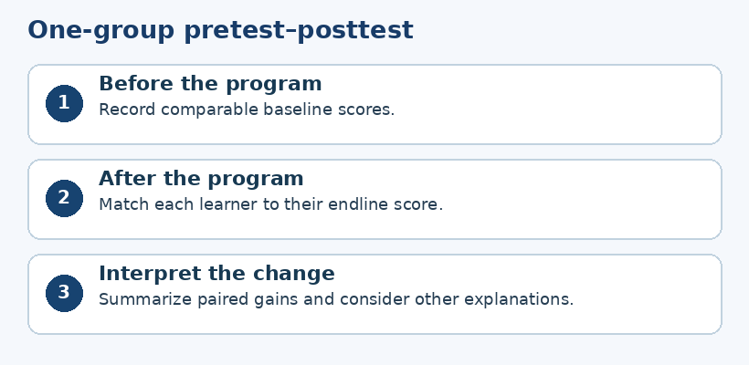
Before the program: Record comparable baseline scores. After the program: Match each learner to their endline score. Interpret the change: Summarize paired gains and consider other explanations.
Worked School Example
Illustrative example. Four learners scored 8, 10, 9 and 13 before remediation and 11, 12, 9 and 14 afterward on equivalent 20-point forms. Individual gains were 3, 2, 0 and 1. The average gain was 1.5 points, and three of four learners improved.
Applying the approach
Convert the illustrative mean gain of 1.5 points on a 20-point test to percentage-of-maximum units. It equals 7.5 percentage points of the available scale. Mean baseline was 10/20, or 50%, and mean endline was 11.5/20, or 57.5%. Describing that result as “a 7.5% relative increase” would confuse the scale. Relative increase against the baseline mean is 1.5/10, or 15%. Reporting points first usually makes the result easiest to interpret.
Add a hypothetical fifth learner who scored 6 at baseline but missed endline. Preserve that learner in the participation count and exclude the incomplete pair from the matched mean-change calculation. Replacing the missing endline with zero would invent a six-point loss. Assuming the learner stayed at 6 would also impose a substantive assumption. Discuss how outcomes among absent learners might differ from those among completers.
If remediation eligibility was based on a low quarterly score and endline used a different remedial task, inspect the competency coverage and difficulty of both instruments before interpreting the two scores as a paired measure of growth.
Report the matched sample, scale, change and variation. Write that participating learners improved by a stated amount during the program. Discuss competing explanations before attributing the gain to the intervention.
Present matched baseline and endline summaries, the unit of change, the proportion showing gains and individual variation. Describe selection, concurrent instruction and test familiarity when discussing attribution. For this example, the school can use the observed gains and the unchanged learner’s record to plan follow-up. A conclusion about the intervention’s causal effect needs a stronger comparison than a single group observed twice.
Alternatives and Common Mistakes
For a stronger intervention comparison, collect comparable outcomes from a suitable comparison group. Avoid treating matched scores as independent groups, or subtracting averages drawn from different sets of learners.
References
Jhangiani, R. S., Chiang, I.-C. A., Cuttler, C., & Leighton, D. C. (2019). Research methods in psychology (4th ed.). Kwantlen Polytechnic University. https://kpu.pressbooks.pub/psychmethods4e/
Marsden, E., & Torgerson, C. J. (2012). Single group, pre- and post-test research designs: Some methodological concerns. Oxford Review of Education, 38(5), 583–616. https://doi.org/10.1080/03054985.2012.731208
Quasi-experimental comparison-group study
Overview
This design compares outcomes under different conditions when assignment is determined by an existing rule or circumstance. Baseline measures help assess initial differences and strengthen the comparison.
Methodological sources (Dimick & Ryan, 2014; Wing et al., 2018).
When to Use It
Choose it when an intervention is introduced in some eligible classes before others and a defensible comparison is feasible. Explain exactly why the groups received different conditions.
Think through the counterfactual in the five-point example. If the treated group would have followed the comparison group’s five-point gain, its expected endline without the routine would be 58 + 5 = 63. Its observed endline was 68, five points higher. This arithmetic makes the assumption visible. If the participating group was already improving faster before implementation, attributing the full extra five points to the routine would overstate the case.
Baseline-adjusted endline analysis and a difference in change answer questions under different assumptions. Adjustment tries to compare endline outcomes among learners with comparable baseline scores and measured covariates. A difference in differences removes time-invariant level differences and relies on comparable untreated changes. Select the approach before seeing which estimate looks more favorable, and document why the assignment process and available measurements support it.
Participants and Evidence
Record assignment rules, eligibility, class and teacher identifiers, baseline and endline outcomes on the same scale, prior trends if available, exposure and missing records for both groups.
The rollout rule may place systematically different learners or classes into the two conditions. A group that could never plausibly receive the other condition makes a weak comparison.
How to check. Describe who decided the rollout order and why. Compare baseline outcomes, grade level, prior attendance, staffing and eligibility distributions. Look beyond equality of group averages.
If the condition is weak. Choose a more comparable group or narrow the target population. Report remaining imbalance and explain why the planned adjustment addresses the relevant baseline differences.
Parallel changes for a difference-in-differences analysis
The central assumption concerns how both groups would have changed without the intervention. They can start at different levels and still follow similar untreated trends.
How to check. Plot several preintervention observations when available. Check policy changes, test revisions and school events that could shift one group’s trajectory at rollout.
If the condition is weak. Use the evidence to judge plausibility. Consider different comparison sites or a different analysis if earlier trends diverge. Similar pretrends support the argument but cannot establish the unobserved counterfactual.
Clustering and concurrent changes
Learners sharing a classroom also share instruction and circumstances. A treatment delivered by one teacher can be completely entangled with that teacher’s practices.
How to check. Count independent classes per condition. Record staff transfers, new resources and class composition changes. Ask whether comparison learners obtained the same materials.
If the condition is weak. Include multiple classes where feasible and use inference that respects clustering. With one class per condition, qualify the comparison as descriptive and avoid treating pupil count as the number of independent implementation units.
Planning the Study
Select groups using the documented rollout process and describe baseline differences.
Plan a between-group contrast before examining endline results. Check whether teacher, timetable or class size differs systematically.
Estimate the contrast with an analysis appropriate to repeated learners and clustering. Examine alternative explanations against implementation records.
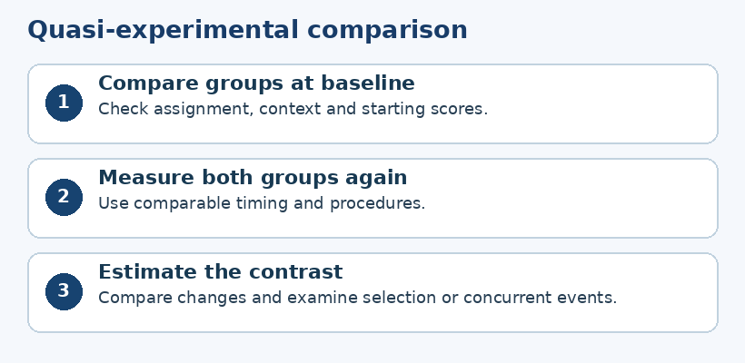
Compare groups at baseline: Check assignment, context and starting scores. Measure both groups again: Use comparable timing and procedures. Estimate the contrast: Compare changes and examine selection or concurrent events.
Worked School Example
Illustrative example. A participating group’s mean rose from 58 to 68. A comparison group rose from 60 to 65. The observed difference in change was (68 − 58) − (65 − 60) = 5 points. If only one teacher delivered each condition, teacher effects remain inseparable from condition.
Applying the approach
Create a calendar for the intervention and comparison classes. Imagine that two weeks before the new routine began, the intervention class received daily supervised library time while the comparison class retained its previous schedule. Mark that event on the outcome plot. Decide whether the study can distinguish the separate contributions. One possible conclusion is that the observed change concerns a package of supports, with the individual contribution of the new routine unresolved.
Make a simple four-cell table with group rows and baseline/endline columns. Beneath each mean, add the number measured and score range. If the intervention class lost several low-scoring learners at endline, recompute descriptive changes among matched records and compare the results. Divergent summaries indicate a composition issue that deserves explanation, even if they point in the same direction.
Document the point when comparison classes become eligible for the routine. Once they receive it, later observations answer a different question about timing or duration of exposure.
Report both groups’ starting and ending levels, the difference in change, uncertainty when estimable, and the assignment mechanism. State which assumptions would support an intervention interpretation.
Explain the comparison rule, preintervention evidence, included units and planned contrast. Display the four means and the estimated between-group difference alongside its uncertainty when the number of independent units supports it. Relate the interpretation to a plausible untreated trajectory and any departures documented in the calendar. A school team can judge local promise while acknowledging how rollout timing or different teaching conditions constrain attribution.
Alternatives and Common Mistakes
If feasible, randomly assign several classes to conditions. Avoid declaring an effect because a within-group test was significant in one group and nonsignificant in the other. The between-group contrast must be evaluated directly.
References
Dimick, J. B., & Ryan, A. M. (2014). Methods for evaluating changes in health care policy: The difference-in-differences approach. JAMA, 312(22), 2401–2402. https://doi.org/10.1001/jama.2014.16153
Wing, C., Simon, K., & Bello-Gomez, R. A. (2018). Designing difference in difference studies: Best practices for public health policy research. Annual Review of Public Health, 39, 453–469. https://doi.org/10.1146/annurev-publhealth-040617-013507
Randomized experiment
Overview
A randomized experiment assigns eligible units to conditions by a chance procedure. When allocation is implemented properly, assignment provides a basis for estimating the effect of offering the intervention.
Methodological sources (Campbell et al., 2012; Schulz et al., 2010).
When to Use It
Choose it when two feasible instructional approaches can be offered under comparable conditions and the school can implement the assigned contrast. Decide whether to assign learners or whole classes.
First define what is being tested. The effect of being offered written feedback rather than audio feedback differs from the effect among learners who actually read every note or listened to every recording. The offer is what random assignment controls. Actual uptake can depend on motivation, device access and prior achievement. A straightforward comparison by assignment preserves the original question even when delivery is imperfect.
If two entire classes receive different approaches, randomizing a coin flip to decide which class receives which approach gives only one class per condition. Forty learners in each room do not create forty replications of the classroom-level assignment. A workable redesign might randomize learners within several classes when contamination is unlikely, or randomize a larger set of classes while retaining assignment at the class level.
Participants and Evidence
Retain the assignment record, unit assigned, intended intervention, actual exposure, common outcome, follow-up status and any departures from the plan. For class assignment, record each learner’s class.
Eligible units should receive a condition by a chance procedure free from discretionary reassignment. Knowing the next assignment can influence who enters the study.
How to check. Check when eligibility was finalized, who generated the sequence, who enrolled units, and when assignments were revealed. Distinguish deliberate balancing through planned random blocks from manual swapping.
If the condition is weak. Freeze the eligible list before revealing assignments or use an independent assignment process. Record departures and analyze original allocation for the primary question.
Unit of allocation
The independent unit is what was randomly assigned. Allocating whole sections creates related learner outcomes within sections and makes the number of classes important.
How to check. Write down how many learners and how many classes were assigned per condition. Identify whether instructional materials, staff or peer interaction can cross condition boundaries.
If the condition is weak. Use an allocation and analysis plan that reflects the actual delivery setting. With very few classes, report how limited replication affects uncertainty and feasibility.
Follow-up and delivery
Random assignment balances groups in expectation at assignment. Differential attrition, outcome scoring and crossover can affect the observed endline contrast.
How to check. Tabulate assigned, offered, received and measured counts for each condition. Examine reasons for missing outcomes and whether scorers could identify the assigned format.
If the condition is weak. Use comparable assessment procedures and independent scoring when feasible. Preserve assigned group identifiers and specify how missing outcomes affect the primary comparison.
Planning the Study
Specify the eligible units, comparison, outcome and analysis.
Generate and preserve a chance allocation. Deliver the assigned approaches and record deviations or crossovers.
Assess both groups under the same protocol. Compare as originally assigned, accounting for class-level allocation where applicable.
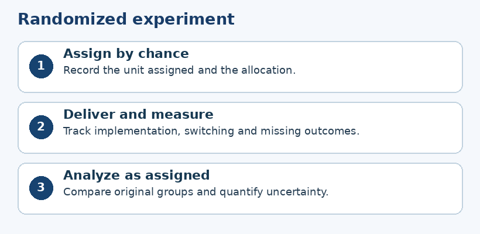
Assign by chance: Record the unit assigned and the allocation. Deliver and measure: Track implementation, switching and missing outcomes. Analyze as assigned: Compare original groups and quantify uncertainty.
Worked School Example
Illustrative example. Forty learners were individually assigned to two feedback formats, 20 per group. Endline means were 16 and 14 out of 20, an observed difference of 2 points. If two learners switched formats during delivery, retain them in their originally assigned groups for the primary comparison.
Applying the approach
Audit a hypothetical trial. Forty learners were assigned, 20 per format. Two assigned to audio used written feedback, and one learner in each group missed the endline. Build a table by original assignment showing 20 assigned in each group, delivery deviations as recorded, and 19 observed outcomes per group. Preserve the two missing outcome flags when estimating the contrast. Report reasons when known and discuss the assumption required by an available-case estimate.
Translate the illustrative two-point difference into classroom meaning. On a 20-point assessment it equals 10 percentage points of the maximum. Whether that gain matters depends on what two items measure, how consistently they were scored and how precise the estimate is. Obtain group variability before calculating a standard error or confidence interval. The two means and the group counts alone cannot supply the missing dispersion information.
If a learner changes classrooms after assignment, retain an original-assignment field alongside the receiving classroom. The change has implications for exposure, clustering and follow-up, all of which should remain visible in the analysis record.
Keep observations in initial groups; avoid counting twice
What the Design Lets You Conclude
Report allocation, follow-up by group, effect estimate and confidence interval when available. Explain what the interval permits and how exposure or missing outcomes affect interpretation.
Report how the sequence was generated, who implemented it, unit assigned, numbers receiving and completing each condition, actual scoring procedure, and effect with an interval when feasible. Random assignment strengthens causal interpretation for the specified offer in the study population. Selection of one school, unusual materials or limited implementation time still constrains transfer to other schools or terms. Record those features so readers can judge the relevance of the estimate.
Alternatives and Common Mistakes
Use a quasi-experimental design when allocation is predetermined by timetable. Randomly sampling respondents addresses recruitment. A randomized experiment additionally requires random assignment to conditions.
References
Campbell, M. K., Piaggio, G., Elbourne, D. R., & Altman, D. G. (2012). Consort 2010 statement: Extension to cluster randomised trials. BMJ, 345, Article e5661. https://doi.org/10.1136/bmj.e5661
Schulz, K. F., Altman, D. G., & Moher, D. (2010). CONSORT 2010 statement: Updated guidelines for reporting parallel group randomised trials. PLoS Medicine, 7(3), Article e1000251. https://doi.org/10.1371/journal.pmed.1000251
Case study
Overview
A case study develops a detailed account of a bounded case in its setting. The case might be one program, one school, one class or a clearly defined implementation episode.
Methodological sources (Crowe et al., 2011; Tomaszewski et al., 2020).
When to Use It
Choose it for a how or why question whose answer depends on context. Name the case, the time window and the boundary that determines which events belong in the study.
Use case study when a school team needs to understand how an initiative unfolded under particular local conditions. Decide what the reader must understand about the site to interpret the finding. A term's tutoring program might depend on shared rooms, tutor availability and how families travel after dismissal. These conditions belong in the explanation when they influence what happens.
Begin with a practical puzzle. If the schedule shows five available sessions but families describe difficulty attending, ask how an available session became accessible or inaccessible in practice. That question identifies records, observations and people who can illuminate different points in the process.
Participants and Evidence
Gather complementary evidence such as schedules, lesson artifacts, observation notes and accounts from people in different roles. Preserve dates and the source of each observation.
A case is an identifiable activity, program, group or institution in context. The boundary determines which events and people belong to the inquiry.
How to check. Write one sentence naming the case, place, period and activity. Ask whether a parent interview about the previous school year fits the boundary.
If the condition is weak. Retain earlier events as background when they explain current practice. Mark them separately from evidence gathered within the study period.
Evidence reaches beyond one viewpoint
A timetable records what was planned, a log records what someone entered, and an interview records a person's account. Each answers a different part of the question.
How to check. Make a table of proposed findings and the sources capable of supporting each. For a cancelled session, check the tutor log and, where available, family accounts.
If the condition is weak. If a source is missing, describe the gap. Treat two documents copied from the same log as one account when weighing corroboration.
Context can change the explanation
An apparent pattern in attendance may reflect transport disruption, schedule conflict, tutor absence or how attendance was recorded.
How to check. For each explanation, specify what else you would expect to find. Look closely at sessions that went ahead despite the same obstacle.
If the condition is weak. Revise the explanation when a contrasting session contradicts it. Retain unresolved alternatives alongside the supporting evidence.
Participants and cases have different roles
A single-school program can be one case with several interviewees. Treating interviewees as independent school programs distorts the comparison.
How to check. Identify the unit about which the final claim will be made. Compare it with the unit represented by every row of your analysis.
If the condition is weak. Write a within-case account first. If the question compares schools, define each school case consistently before examining patterns across cases.
Planning the Study
Define the case and its boundaries.
Build a timeline and organize evidence by event or issue, preserving the source of each claim.
Compare accounts across sources, seek exceptions and develop an explanation tied to the case context.
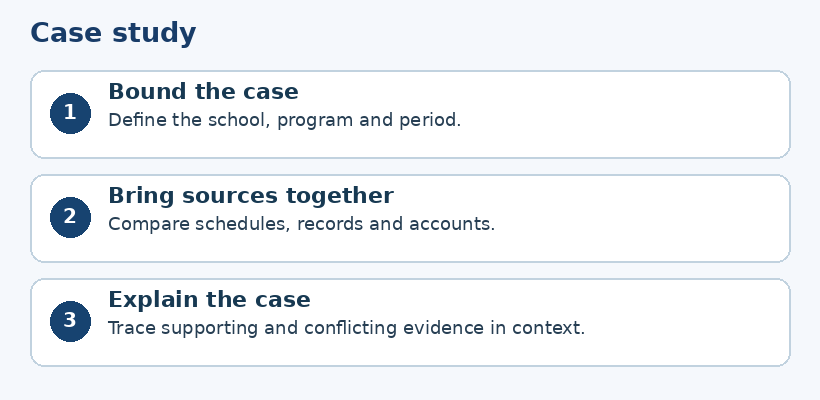
Bound the case: Define the school, program and period. Bring sources together: Compare schedules, records and accounts. Explain the case: Trace supporting and conflicting evidence in context.
Worked School Example
Illustrative example. A tutoring schedule shows five planned sessions. A tutor reports difficulty reaching families. Attendance sheets show that the two least-attended sessions coincided with a transport disruption, and parent accounts describe missed rides. The case points to timing and transport as plausible implementation barriers.
Applying the approach
Arrange the five sessions in date order. In one column record the planned arrangements. In another record what actually occurred, how this was established and which accounts remain uncertain. A blank attendance field could mean absence, cancellation or incomplete entry. Check its meaning with the person who prepared the register before interpreting it.
Write a short memo for the two sessions that coincided with disrupted transport. Compare their start time, attendance and tutor notes with a session at the usual time. Ask a family to describe how they decided whether to attend. If a learner stayed away during normal transport because of caring duties, add a second pathway to the explanation.
Two least-attended sessions coincided with transport disruption
Identifies timing
Which learners relied on rides?
Parent accounts
Families described missed rides
Suggests a mechanism
Did other barriers affect attendance?
Tutor interview
Difficulty reaching families
Adds communication context
Could families receive schedule changes?
What the Design Lets You Conclude
Describe the case and the evidence behind each interpretation. A schedule establishes what was planned, attendance shows who came, and interviews can explain why participants say they attended or missed sessions.
An illustrative write-up could say, “Across this term's five sessions, timetable changes coincided with two attendance dips. Families described missed transport, while another family described a competing responsibility. These accounts suggest two access barriers that the team can address separately.” Identify the actual evidence supporting each sentence before using this wording.
Give enough context for a reader to judge relevance to another school. A second school with a morning session and school-provided transport may face different conditions. For the case school, a proportionate next step is to trial a change in timing and examine whether families who reported transport difficulty can attend.
Alternatives and Common Mistakes
Use a survey if the primary purpose is to estimate prevalence across many schools. Using one school as the data-collection site alone does not define a case study. Identify the bounded case and develop the within-case explanation.
References
Crowe, S., Cresswell, K., Robertson, A., Huby, G., Avery, A., & Sheikh, A. (2011). The case study approach. BMC Medical Research Methodology, 11, Article 100. https://doi.org/10.1186/1471-2288-11-100
Tomaszewski, L. E., Zarestky, J., & Gonzalez, E. (2020). Planning qualitative research: Design and decision making for new researchers. International Journal of Qualitative Methods, 19, 1–7. https://doi.org/10.1177/1609406920967174
Phenomenology
Overview
Phenomenology investigates the meaning of an experience as lived by people who have encountered it. Descriptive and interpretive traditions differ in how the researcher handles interpretation and prior understanding.
Methodological sources (Neubauer et al., 2019; Tomaszewski et al., 2020).
When to Use It
Choose it when a question asks what a particular experience is like. Returning after prolonged absence is a clearer focus than a broad request for opinions about attendance.
A school may already know the dates of a learner's absence and return. Phenomenology is useful when the unanswered question concerns how the transition was lived. Design interviews around a manageable period, such as the first morning back, so that participants can recall events in detail and choose what matters to them.
Before interviewing a learner whom you teach, consider how the relationship may shape what they feel able to say. Offer a setting and interviewer appropriate to the school context. Make room for the participant to skip questions and to describe ordinary or positive experiences as well as difficult ones.
Participants and Evidence
Recruit participants who experienced the phenomenon and can describe particular situations. Gather detailed accounts of moments, sensations, relationships and meanings. Include reflexive notes about the researcher’s expectations.
The study depends on descriptions from people who experienced the phenomenon and can describe particular moments in their own terms.
How to check. Ask prospective participants what experience qualifies them for the study. A school transfer and a return after prolonged absence may involve different experiences even when both learners rejoin a class.
If the condition is weak. Define the experience more precisely or explicitly explore the differences. A teacher's observations may supply context, but they cannot establish what a learner felt.
Rich accounts of particular episodes
A general opinion such as “returning was hard” offers little evidence about how that difficulty was experienced.
How to check. Check whether the transcript identifies a setting, an action, a reaction or a change in attention. Ask, “Take me through the moment you first sat down.”
If the condition is weak. Follow up sensitively with prompts about what happened next. If answers remain brief, reconsider whether the available material supports an experiential study.
An explicit interpretive stance
Descriptive and interpretive phenomenology take different positions on how researchers' prior understanding enters analysis. The selected tradition guides what counts as a defensible interpretation.
How to check. Read the proposal's analysis plan alongside its philosophical stance. If you propose interpretative phenomenological analysis, check that detailed individual accounts will be examined before cross-case patterns.
If the condition is weak. State the tradition and use its procedures consistently. In a reflexive note, record how your own ideas about attendance might shape which details seem important.
Attention to variation
Participants may attach different meanings to a similar classroom action. Insight can come from an account that changes the interpretation of a shared experience.
How to check. Compare accounts of asking a classmate for the correct page. Look for whether this felt reassuring, embarrassing or simply efficient to each learner.
If the condition is weak. Keep distinctive meanings visible. Narrow any proposed common description until it fits the accounts you actually have.
Planning the Study
Define the shared experience and invite accounts of specific moments.
Read individual accounts closely and identify meaning units using the chosen tradition. Keep a record of interpretive decisions.
Develop a description or interpretation that shows shared features and variations, returning to individual passages to test it.
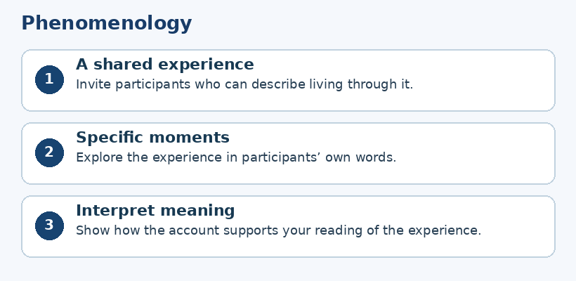
A shared experience: Invite participants who can describe living through it. Specific moments: Explore the experience in participants’ own words. Interpret meaning: Show how the account supports your reading of the experience.
Worked School Example
Illustrative example. One returning learner says, “Everyone knew which page to open. I waited for someone to point.” Another describes checking a classmate’s notebook before answering. An interpretation of quietly rebuilding classroom belonging connects the accounts while preserving their different details.
Applying the approach
Start with one transcript. Beside “I waited for someone to point,” note the immediate event and what the speaker says about waiting. Pose a possible interpretation: a previously familiar routine has become uncertain. Set it beside another possibility: the learner was simply awaiting a routine direction. Return to the surrounding account to see which fits.
Prepare a short account for each participant before comparing them. A second learner's notebook-checking might indicate a wish to participate discreetly; an account of openly asking a teacher may reveal a different way of restoring familiarity. Record what each interpretation relies on, including passages that complicate your first reading.
Quietly rebuilding familiarity is a tentative shared meaning
Where do the individual meanings diverge?
What the Design Lets You Conclude
Explain what the experience meant to participants and show how particular words or episodes support the interpretation. Under interpretative phenomenological analysis, give each case attention before developing cross-case patterns.
An illustrated finding might describe the tension between being physically back in a familiar classroom and needing to rediscover its routines. Pair a short anonymized passage with an explanation of the meaning you discerned. Show why that reading is plausible in the wider account and state where another learner experienced the return differently.
A useful implication is to ask returning learners privately which routines they would like explained. Keep the strength of that suggestion separate from the finding. Interviews about returning can inform a supportive response; claims about its effectiveness would require evidence collected after the response is introduced.
Alternatives and Common Mistakes
Choose qualitative description for a practical list of requested services. A count of students who endorsed an option gives little access to the lived meaning of an experience.
References
Neubauer, B. E., Witkop, C. T., & Varpio, L. (2019). How phenomenology can help us learn from the experiences of others. Perspectives on Medical Education, 8(2), 90–97. https://doi.org/10.1007/s40037-019-0509-2
Tomaszewski, L. E., Zarestky, J., & Gonzalez, E. (2020). Planning qualitative research: Design and decision making for new researchers. International Journal of Qualitative Methods, 19, 1–7. https://doi.org/10.1177/1609406920967174
Ethnography
Overview
Ethnography investigates the shared practices, meanings and expectations of a group through sustained engagement in its setting. Researchers learn how members interpret routine actions and informal rules.
Methodological sources (Reeves et al., 2008; Tomaszewski et al., 2020).
When to Use It
Choose it when a recurring activity or group practice needs explanation, such as how reading-club members decide who may lead a discussion.
Choose ethnography when a school needs to understand the social organization of a practice. A simple count of turns can tell a club adviser who read. Observation and discussion can uncover how members recognize permission to pass, how an experienced reader offers assistance and how an unfamiliar learner learns the routine.
Plan where you will stand and what you can hear. Brief field jottings preserve sequence; expanded notes soon after the session preserve dialogue, setting and uncertainties. Use quotation marks only for words accurately recorded. An approximation from memory belongs in a paraphrase.
Participants and Evidence
Use observations across ordinary and unusual occasions, fieldnotes, participant explanations and relevant artifacts. Note who is present, the researcher’s role, what happened and how participants explained it.
The study examines how members of a group learn, negotiate and sustain ways of acting together. A collection of unrelated individual opinions supplies a different kind of evidence.
How to check. Identify a practice that members encounter repeatedly. Ask what a newcomer would have to learn in order to participate comfortably in the reading club.
If the condition is weak. If no shared activity can be observed, narrow the setting or consider interviews focused on individual experiences.
Sufficient time and range of observation
Group routines vary with the people present, the task and the presence of adults. A single striking event may be unusual.
How to check. Map visits across ordinary meetings, special events and changes in membership. Record which activities and member roles you actually witnessed and which you missed.
If the condition is weak. Extend observation purposefully when a claim rests on only one occasion. Bound the report to the period and activities your access covered.
Insider meanings can be checked
A visitor may interpret a familiar gesture differently from the people using it. Members can also disagree about its meaning.
How to check. Record what happened before asking a nonleading question, such as “What choices did holding the pencil give you today?” Compare explanations from established and newer members.
If the condition is weak. Maintain separate notes for observed action, participant explanation and your inference. Show disagreements when the practice carries several meanings.
The observer affects the setting
Being a teacher, adviser or visitor may change who speaks, which rules are emphasized and what is visible.
How to check. Keep a field-role memo for each visit. Record whether you led the activity, waited at the back, intervened, or were asked to settle a disagreement.
If the condition is weak. Compare sessions with different observer roles when feasible. Account for your role in the interpretation and remove details that could identify individual children.
Planning the Study
Identify the group, setting and practice to follow.
Observe recurring events and write descriptive notes promptly. Ask members what local expressions, symbols or routines mean to them.
Compare occasions, identify recurring norms and seek episodes that challenge the emerging interpretation.
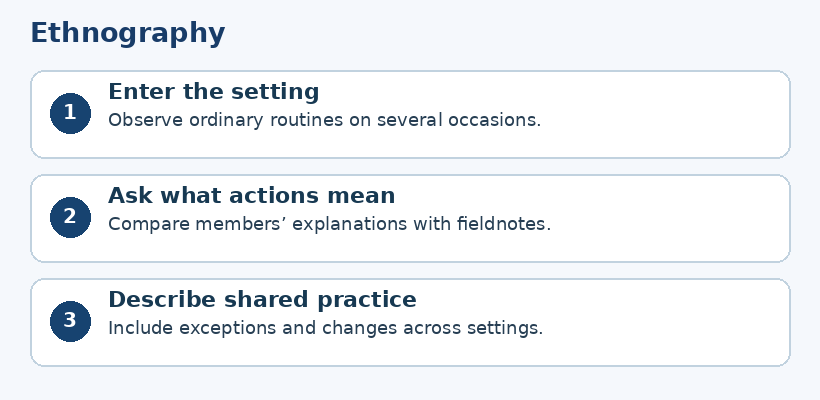
Enter the setting: Observe ordinary routines on several occasions. Ask what actions mean: Compare members’ explanations with fieldnotes. Describe shared practice: Include exceptions and changes across settings.
Worked School Example
Illustrative example. Across several club sessions, learners pass a pencil before reading aloud. A visitor interprets it as turn assignment. Members explain that holding the pencil permits a learner to request help. An occasion when a new member reads immediately reveals how newcomers learn that shared convention.
Applying the approach
Draw a simple event grid for three contrasting meetings. Make separate entries for who reached for the pencil, what happened next, how others responded and what members later said it meant. Avoid writing “the shy pupil refused” as an observation. Record the learner's action and any explanation they volunteered.
Use the new member's immediate reading as a comparison. Did others prompt a request for help, accept the reading, laugh, or change the procedure? Ask a returning member how newcomers usually learn the convention. Observe a later meeting for instruction or demonstration that would support or weaken this account.
Describe the practice in context, distinguish observed action from an insider’s explanation, and show how evidence accumulated over time. Include contrasting occasions that refine the proposed meaning.
Present a short scene, interpret it with participants' explanations, and show a second scene that tests the interpretation. An illustrative finding might be that the pencil allowed members to control assistance during familiar exercises, while its role was negotiated again when a newcomer joined. Name the setting and occasions in which you observed this.
Translate the finding into a question for practice. If participation depends on knowing an informal rule, how might a club make that rule visible to newcomers without disrupting existing cooperation? A reader should be able to see how this consideration grew from observation and where a different group might organize itself differently.
Alternatives and Common Mistakes
Use focused classroom observation if the question only asks how often a behavior occurs. A single visit can identify a question worth pursuing but rarely establishes a group’s shared culture.
References
Reeves, S., Kuper, A., & Hodges, B. D. (2008). Qualitative research methodologies: Ethnography. BMJ, 337, Article a1020. https://doi.org/10.1136/bmj.a1020
Tomaszewski, L. E., Zarestky, J., & Gonzalez, E. (2020). Planning qualitative research: Design and decision making for new researchers. International Journal of Qualitative Methods, 19, 1–7. https://doi.org/10.1177/1609406920967174
Narrative inquiry
Overview
Narrative inquiry examines how people organize experiences into stories. Sequence, turning points, setting, audience and the teller’s standpoint shape the account.
Methodological sources (Clandinin, 2006; Tomaszewski et al., 2020).
When to Use It
Choose it when the research question asks how someone understands change over time, such as how a beginning teacher came to revise an approach to teaching reading.
Narrative inquiry suits questions about how people understand experiences as part of a developing life or professional story. A teacher describing a shift in reading instruction might begin at a difficult lesson, return to an earlier mentor conversation, and end with a learner's response. That arrangement can reveal how the teacher now understands the change.
Agree on a manageable span, such as a teacher's first term of implementing guided reading. Identify opportunities for more than one conversation so that the narrator can revisit an event or respond to a draft account. Decide how material involving former pupils or colleagues can be represented responsibly.
Participants and Evidence
Collect extended accounts, follow-up conversations and optional artifacts such as dated lesson plans or journals. Preserve which details come from the teller, an artifact or your interpretation.
Narrative inquiry depends on accounts that connect episodes, relationships and meanings across time. The order a person chooses to tell a story can itself carry meaning.
How to check. Check whether the material includes events before and after the turning point. Ask what the narrator remembers expecting at the time and what the episode means looking back.
If the condition is weak. Invite a further telling through a journal, lesson artifact or second conversation. A collection of short answers to unrelated prompts may better support a descriptive approach.
Place and relationships shape the story
Classroom experiences acquire meaning through interactions with colleagues, learners and school expectations. The same event can occupy a different place in another person's story.
How to check. Mark who appears in each episode, where it happened, and whose viewpoint is represented. Distinguish the narrator's recollection of another person from that person's own account.
If the condition is weak. Retain necessary context while changing identifying particulars carefully. Avoid assigning motives to people who did not offer an account.
The account is co-produced
An interview question, the teacher's present role and the researcher's relationship to the narrator influence what gets told and emphasized.
How to check. Compare the passage before and after an interviewer prompt. Did a question about improvement invite a success story that had little prominence before the prompt?
If the condition is weak. Ask an open follow-up that permits ambiguity or a different ending. In field notes record how the conversation and your interpretation shaped the written story.
Remembered meaning and chronology can diverge
A narrator may compress several events or tell them out of sequence. A dated artifact can clarify timing without settling what an event meant.
How to check. Build two timelines: the likely order of events and the order in which they were recounted. Mark uncertainty instead of inventing dates.
If the condition is weak. Keep the narrative sequence where it reveals meaning. Invite clarification when a date matters and disclose uncertainties that affect the reader's understanding.
Planning the Study
Invite the participant to recount episodes in their own order.
Construct a provisional timeline, identify turning points and ask how the person connects them. Examine language and context as well as chronology.
Develop a narrative account that retains tensions, revisions and uncertainty, documenting the researcher’s role in composing it.
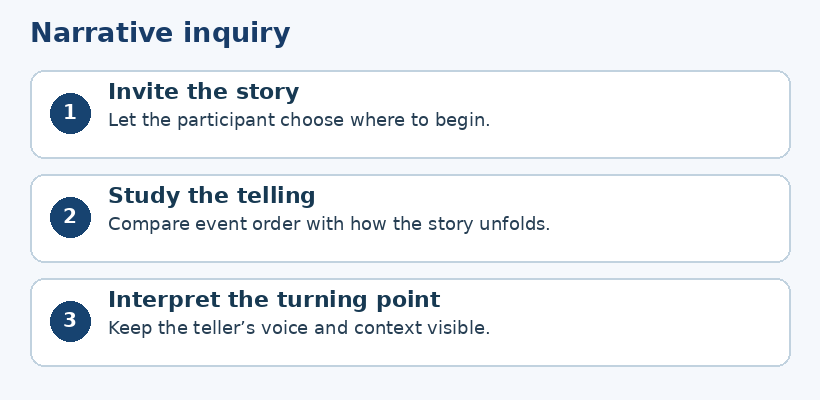
Invite the story: Let the participant choose where to begin. Study the telling: Compare event order with how the story unfolds. Interpret the turning point: Keep the teller’s voice and context visible.
Worked School Example
Illustrative example. A teacher begins the story with a lesson that failed, then recalls an earlier mentor conversation, and ends with a learner asking to try again. A dated journal helps order the events. Starting with the failed lesson reveals what the teacher now treats as the turning point.
Applying the approach
Open with “Tell me about learning to teach this reading routine, beginning wherever it makes sense to you.” Invite concrete memories through a sample lesson plan. Ask what the teacher expected before the difficult lesson, how the mentor's advice sounded then, and why it is significant now.
Write a short account preserving the teacher's opening, middle and ending. Beside each passage mark whether it comes from an interview, a dated entry or your interpretation. If the mentor conversation predates the lesson, preserve the narrator's deliberate return to it and explain how recalling it changes the story.
Present a coherent account with excerpts that show how events acquired meaning. If several people participate, develop each narrative before comparing patterns across stories.
Illustrative reporting might read, “Although the mentorship meeting came earlier, the teacher began with the silent reading lesson. In the retelling, that silence changed the meaning of advice she had previously considered routine.” Support this reading with carefully chosen excerpts and acknowledge the interview prompts that brought the mentor into the story.
If the teacher offers an alternative reading of the draft, explore why the two readings differ and consider incorporating both. Distinguish what this particular account illuminates about professional learning from broader claims about what mentoring usually achieves. Preserve unresolved elements when they are important to the experience.
Alternatives and Common Mistakes
Use thematic analysis across accounts if the question concerns shared issues irrespective of sequence. Grouping excerpts under topics alone loses the chronology that gives a narrative its meaning.
References
Clandinin, D. J. (2006). Narrative inquiry: A methodology for studying lived experience. Research Studies in Music Education, 27(1), 44–54. https://doi.org/10.1177/1321103X060270010301
Tomaszewski, L. E., Zarestky, J., & Gonzalez, E. (2020). Planning qualitative research: Design and decision making for new researchers. International Journal of Qualitative Methods, 19, 1–7. https://doi.org/10.1177/1609406920967174
Grounded theory
Overview
Grounded theory develops an explanatory account of a process from iterative collection and analysis. Categories become linked through comparison, memo writing and further sampling.
Methodological sources (Chun Tie et al., 2019; Starks & Trinidad, 2007).
When to Use It
Choose it when a researcher seeks an explanation of how a process unfolds under different conditions, such as how teachers try, modify and sustain a feedback routine.
Use grounded theory when the school needs an explanation it can examine in future settings. For example, teachers facing the same marking volume may shorten comments, share marking, or change when and how feedback is given. A process explanation asks what conditions make one pathway more likely and how teachers respond to its consequences.
Choose a grounded theory tradition and make its approach to coding, interpretation and the researcher's role explicit. A conceptual diagram can help, but draw it after comparing cases. An attractive sequence constructed before data collection can quietly steer questions toward confirming the researcher's preferred explanation.
Participants and Evidence
Gather accounts or observations that show actions, decisions, conditions and consequences. Keep analytic memos and retain enough flexibility to seek new cases as questions emerge.
A grounded theory design seeks a conceptual explanation of how people act and respond under varying conditions. Naming several common issues is an earlier analytic achievement.
How to check. Frame the question around an unfolding process. Ask whether a tentative answer shows conditions, actions, interactions and consequences, or simply lists factors teachers mentioned.
If the condition is weak. If a useful description is sufficient for the project, choose a descriptive or thematic approach. Reserve a theory claim for a developed account of relationships.
Data collection and analysis can inform each other
Early analysis suggests what evidence to collect next. A sampling plan must leave room to pursue an emerging conceptual gap.
How to check. After the first interviews, identify one category that needs contrast. For example, ask who kept detailed feedback under high marking loads and what made that possible.
If the condition is weak. Seek access to people, artifacts or events that can illuminate this contrast. If access is fixed, describe the limits on theoretical sampling and scale back the claim.
Constant comparison develops categories
A useful category explains similarities and variation across incidents. A code used repeatedly may still be too broad to explain a process.
How to check. Compare incident with incident, incident with a proposed category, then category with another category. Ask when two apparently similar decisions had different consequences.
If the condition is weak. Split a category when distinct mechanisms emerge. Combine categories only when the combined explanation retains the important differences.
Analytic sufficiency must be demonstrated
The endpoint concerns development of the central categories and their relationships within a stated scope. Interview count alone cannot establish it.
How to check. Inspect the latest memos for properties that remain vague and relationships based on only one example. Identify any cases that a proposed explanation cannot accommodate.
If the condition is weak. Collect targeted evidence if feasible. Otherwise report a provisional model and name the particular relationship or context that remains underdeveloped.
Planning the Study
Begin with cases that illuminate the process and code closely for actions.
Compare incidents, write memos and select further participants or observations to clarify emerging categories.
Build and refine relationships among categories. Explain the basis for stopping and identify relationships requiring further study.
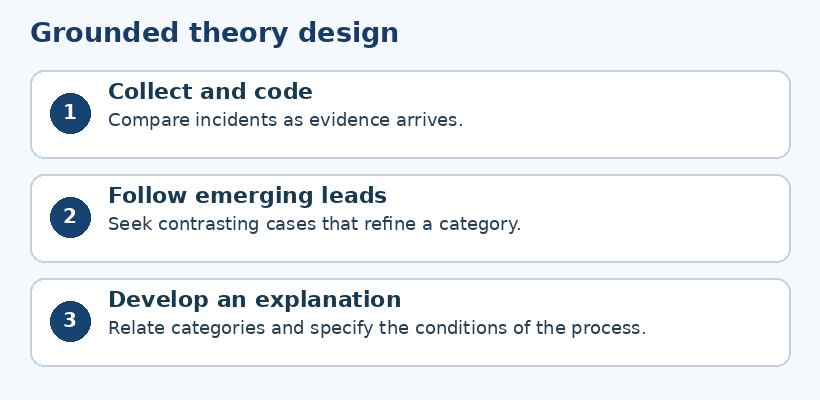
Collect and code: Compare incidents as evidence arrives. Follow emerging leads: Seek contrasting cases that refine a category. Develop an explanation: Relate categories and specify the conditions of the process.
Worked School Example
Illustrative example. Early accounts describe teachers shortening feedback when marking piles grow. The researcher then samples teachers who retained detailed feedback despite large classes. Their peer-sharing routines suggest that redistributing work can alter the relationship between marking load and feedback depth.
Applying the approach
Begin with a teacher's account of abandoning detailed comments during a marking backlog. Code the action in concrete terms and memo your first idea: increasing workload may prompt shorter comments. Ask what evidence would challenge that idea. A second teacher who maintains detailed comments during equally heavy weeks provides a deliberate comparison.
Examine the two teachers' marking routines. If one shares examples and drafts feedback with colleagues, compare episodes before and after that collaboration. Develop the category from “workload” toward a conditional process such as reorganizing feedback work. Seek another example where collaboration exists but comments still become shorter, and identify what else must be explained.
Report categories, their relationships and the range of conditions observed. Include contrasting incidents that changed the explanation so readers can follow how the proposed process developed.
A provisional account might read, “When marking accumulated, teachers considered changing the depth of feedback. Shared routines sometimes redistributed the preparation work, allowing detailed comments to continue. Their usefulness depended on having time for coordination.” In an actual report, present incidents supporting each relationship and a contrasting case that defined its limits.
Describe how emerging findings changed at least one sampling or interview decision. State the circumstances under which the proposed model appears useful and which settings were outside the inquiry. A visual map should label the relationships, explain their direction and make visible the evidence on which they rest.
Alternatives and Common Mistakes
Choose thematic analysis if the goal is to characterize shared experiences in a fixed set of interviews. A list of recurring topics alone does not explain a process or show theoretical sampling.
References
Chun Tie, Y., Birks, M., & Francis, K. (2019). Grounded theory research: A design framework for novice researchers. SAGE Open Medicine, 7, 1–8. https://doi.org/10.1177/2050312118822927
Starks, H., & Trinidad, S. B. (2007). Choose your method: A comparison of phenomenology, discourse analysis, and grounded theory. Qualitative Health Research, 17(10), 1372–1380. https://doi.org/10.1177/1049732307307031
Practitioner action research
Overview
Practitioner action research investigates a local problem while practitioners take deliberate action to improve it. Evidence from one cycle informs a documented choice for the next.
Methodological sources (Kemmis et al., 2014; Somekh, 1995).
When to Use It
Choose it when teachers or school teams can change their own practice, monitor what happens and decide how to adapt. State a manageable question and the improvement the team expects to observe.
Begin with a question the school can answer with its current resources: “What happens to voluntary reading when our tutor introduces paired rehearsal?” Plan a cycle short enough to support timely reflection but long enough to observe ordinary variation. Compare the same type of lesson and record any change in material difficulty, teacher prompts or group membership.
Action research can use numerical and qualitative evidence where each serves a decision. A participation tally shows what happened. A short learner comment may explain why it happened or why the same routine had different consequences. Decide beforehand how each kind of evidence will be used at the reflection meeting.
Participants and Evidence
Collect baseline evidence, a record of the planned change, implementation notes, outcome indicators and participant feedback. Preserve the dates and rationale for each revision.
A cycle leads to a decision about practice that someone in the setting can implement and review. A goal such as improving all reading performance is too broad to guide one cycle.
How to check. Ask who can change what before the next observation. Identify a concrete practice, such as rehearsal time, and a short-term outcome it could plausibly influence.
If the condition is weak. Narrow the question until the action, person responsible, timing and observable outcome are clear. Record longer-term goals separately.
The indicator measures the intended change
Volunteering, accuracy and comprehension describe different aspects of reading. Repeated measurement requires a consistent definition and a meaningful opportunity to respond.
How to check. Agree whether volunteering means raising a hand, accepting an invitation or beginning to read. Record how many opportunities learners had and who was present.
If the condition is weak. Train observers on examples. If opportunities or attendance change, revise the comparison and report the denominators rather than attributing raw count changes to the routine.
The practitioner also shapes the evidence
A teacher delivering a new routine may pay extra attention to successful moments. Learners may try to please the teacher or avoid criticizing the change.
How to check. Compare tutor notes with a second observer's tally or anonymous learner feedback where appropriate. Ask a colleague to identify a plausible competing interpretation.
If the condition is weak. Preserve disagreements and unexpected effects in the reflection. Give pupils a way to explain unhelpful features without connecting criticism to grades.
A cycle includes reflection and a subsequent decision
The study gains practical value when evidence prompts a decision to keep, change or discontinue an action and informs the next observation.
How to check. Before implementation, write down what evidence would lead to each decision. After the cycle, check whether the conclusion considers participant experiences and feasibility alongside outcomes.
If the condition is weak. Specify the next adjustment and what difference you expect to see. If the first action was delivered inconsistently, investigate delivery before changing several features together.
Planning the Study
Identify a local concern and agree on a feasible change and indicator.
Implement the change while recording delivery, participation and unanticipated events. Review outcomes and feedback with those involved.
Use the evidence to retain, adapt or replace the change. State the next cycle’s question and collect comparable evidence.
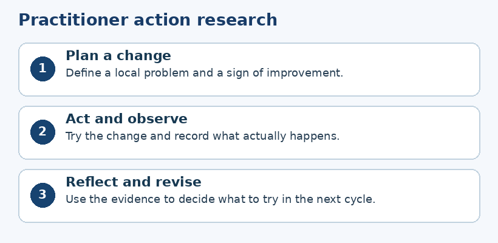
Plan a change: Define a local problem and a sign of improvement. Act and observe: Try the change and record what actually happens. Reflect and revise: Use the evidence to decide what to try in the next cycle.
Worked School Example
Illustrative example. In one tutoring group, 4 of 10 learners volunteered to read in a baseline observation. After paired rehearsal, 7 of the same 10 volunteered in the next observed session. Two learners said they needed more preparation time. The team keeps rehearsal and tests a longer preparation period in the next cycle.
Applying the approach
For the group of ten, prepare one row per learner and one column per observed session. Record attendance, opportunity and whether the learner volunteered under the agreed definition. Keep a short delivery note on actual rehearsal time. This allows the group to distinguish broader participation from repeated volunteering by a few confident readers.
In the reflection meeting, set the change from four to seven volunteers beside the two requests for more preparation time. Check whether the same pupils were present and whether the text was easier in the second session. Agree on one adaptation, such as extending rehearsal, keep other features as steady as feasible, and identify what will be observed next.
Test longer preparation and collect participation data
What the Design Lets You Conclude
Report the setting, action, observed change, participant explanations and the resulting decision. Two observations can justify exploring an adjustment locally, while the cause and persistence of the change remain uncertain.
Report what was tried, what happened, how participants experienced it, and why those findings led to the next action. “Voluntary reading rose from four to seven of ten present learners in the observed sessions. Two learners asked for more preparation time, so the team extended rehearsal in cycle two.” Record what cycle two eventually showed.
Separate a local improvement decision from a claim that rehearsal caused the increase. Differences in passages, familiarity with the observer, or the day's attendance could contribute. Another school can use the account to plan its own trial when the report describes the group, the routine, its actual delivery and the costs of sustaining it.
Alternatives and Common Mistakes
Choose a comparative intervention design if the main aim is to estimate an effect against another condition. Delivering an activity and recording attendance alone gives little basis for deciding how practice should change.
References
Kemmis, S., McTaggart, R., & Nixon, R. (2014). The action research planner: Doing critical participatory action research. Springer. https://doi.org/10.1007/978-981-4560-67-2
Somekh, B. (1995). The contribution of action research to development in social endeavours: A position paper on action research methodology. British Educational Research Journal, 21(3), 339–355. https://doi.org/10.1080/0141192950210307